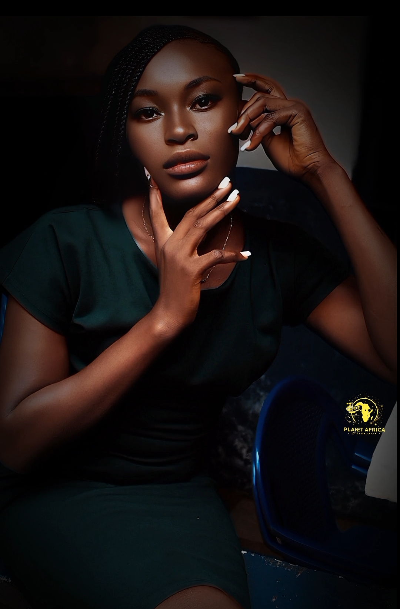

📰 Nos Actualités

Portrait de Tchida Fopi Anabelle Florile
Une étoile montante révélée par la série Héritiers. Découvrez son histoire, sa vision du cinéma et ses débuts prometteurs.
Lire l’articleUne étoile montante révélée par la série Héritiers. Découvrez son histoire, sa vision du cinéma et ses débuts prometteurs.
Lire l’article